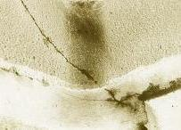

Package
Cracking
Plastic Package Delamination
Plastic
delamination refers to the disbonding between a surface of the plastic
package and that of another material.
Plastic delamination may therefore occur at an interface of the
plastic and the leadframe, die, die paddle, or die attach material. It also means the loss of adhesion between the plastic
material and one or more of the other materials.
In a plastic package, the sources of this adhesion are the
chemical bonding between the molding compound and the other materials'
surfaces, and the differential contraction of the materials.
Contaminants
on the surface of the leadframe, die, or die paddle can prevent good
adhesion with the plastic material and lead to delamination. The use of
incorrect leadframe texture, dimensions, and design can also reduce
adhesion strength. The use of molding compounds with excessive mold
release agent can also lead to delamination. Excessive mismatches
between the thermal coefficient of the plastic and those of the
leadframe, die, and die attach material can also result in delamination.
Insufficient bond line thickness due to inadequate die attach material
dispensing may result in cohesion failure within the die attach
material, which can lead to package delamination and even cracking.
Packages of
plastic surface mount devices (SMDs) may delaminate internally, if not
crack, because of the intense pressure build-up generated by the
vaporization of the internal moisture inside the package during solder
reflow (see Plastic Package Cracking for
more details). These type of delamination occurs between the die and/or
die paddle and the plastic, and always precedes package cracking.
Seal Cracking
Solder
seal cracking
is the occurrence of fracture(s)
(see Fig. 3)
anywhere in the solder seal of a ceramic package that uses a combo lid,
e.g., sidebrazed, LCC, and JLCC packages.
Most solder seal cracks may be attributed to defects in the seal, which
in turn are due to a poor solder sealing process. Mechanical defects
such as voids, incomplete coverage, and poor filleting, and chemical
defects such as seal oxidation or corrosion, weaken the seal and make it
susceptible to cracking.
A sudden and
large change in package temperature can lead to solder seal cracking
too, especially if there are defects in the seal. Such sudden changes in temperature cause tremendous
thermomechanical stresses at the ceramic-to-metal interfaces of the
package, due to large differences between the coefficient of thermal
expansion of ceramic and those of the metals used in the package. For
instance, inadequate pre-heating can result in solder seal cracks during
solder dipping.
Poor package
design or condition can also cause solder cracks. The use of
insufficient seal path widths or inadequate seal preform can result in
narrow seals, which are more likely to crack than a robust seal.
A lot of
solder seal cracks are just secondary effects of package cracking.
Interestingly, some seal cracks even look worse than the primary failure
mechanism, namely package cracking, which can be invisible without
staining the package. A thorough check of the package for microcracks
must therefore be conducted everytime a solder seal crack is analyzed,
no matter how gross the seal damage looks.
Seal
glass cracking
is the occurrence of fracture(s) anywhere in the seal glass of a Cerdip
package. Most seal glass
cracks may be attributed to impact stresses.
A common cause of impact stresses is end-to-end banging between
units from improper handling of tubes.
Advanced stages of seal glass cracking from impact stresses can
lead to base-cap separation (see separate article on 'Base-Cap
Separation').
Seal glass
cracking may also be aggravated by seal glass defects such as base-cap
mismatches and offsets, glass overcure, glass undercure, and excessive
glass etching from the cleaning processes prior to leadfinish.
Ceramic Package
Cracking
Ceramic
package cracking is the occurrence of fracture(s)
(see Fig. 2)
anywhere in or on a
ceramic package. Ceramic
cracks can be caused either by thermomechanical or by purely mechanical
means. The distinction
between cracks due to thermomechanical causes and those due to purely
mechanical causes is not always easy though.
A
sudden and large change in package temperature causes tremendous
thermomechanical stresses at the ceramic-to-metal interfaces of the
package, due to large differences between the coefficient of thermal
expansion of ceramic and those of the metals used in the package. For
instance, inadequate pre-heating can result in ceramic cracks during
solder dipping. Packages with castellations are vulnerable to this
mechanism, since the expansion of the metal inside the castellation
during solder dipping tends to split the ceramic around it, initiating a
crack that can easily propagate across the package.
Impact
loading is the most common source of package cracks in ceramic DIPs.
Impact loading is the sudden application of force on a body. Ceramic units inside metal tubes can easily crack if the tube
is accidentally dropped to the floor, especially if the floor is made of
concrete. End-to-end
banging from tube-to-tube or equipment rail-to-rail transfers can also
result in cracks. High-pressure
air drying that propels one unit into another has even been found to
cause base-cap separation. Data
also suggest that improper tube packing can lead to microcracks that can
propagate through subsequent handling. Massive units dropping to any
hard surface of an equipment can also suffer microcracks.

Figure 2.
Photo of a cerdip
with a corner
package and seal
glass crack
Poor
package design or condition can also cause package cracks.
Sidebrazed units with rhino horns are highly vulnerable to
package cracking and chipping during end-to-end collisions.
Some sidebrazed packages need their plating bars removed by
grinding. The grinding
process can produce both a recession and a protrusion at the package
end. Such a protrusion is
called a rhino horn, and acts as a stress concentrator when a unit
collides with another during tube-to-tube or rail-to-rail transfers.
This stress concentration can result in cracks that originate
that the corner of the package where the rhino horn is present. Package
defects like microcracks, voids, geometrical aberrations, and the like
all act as stress concentrators.
Poor
equipment set-up or debris under the package during back-end mechanical
operations like lead trimming may possibly cause cracks, although this
has become rare over the past years.
Base-cap
separation is the detachment of the cap from the base of a cerdip
package due to high-impact shearing between the cap and base. Base-cap separation is basically a failure of the glass seal
of the package, even though the impact loading occurs at the ceramic
package itself. Base-cap
separation may therefore be defined also as a total fracture of the seal
glass all around the seal path, resulting in the separation of the cap
from its base.
The
most common cause of base-cap separation is end-to-end banging. Units
with excessive longitudinal mismatch or offset between the base and cap
are therefore more susceptible to exhibit this failure. The use of
extremely high pressure for blow-drying units can propel units into one
another, and lead to base-cap separation.
Improper tube-to-tube or rail-to-rail transfers can also lead to
base-cap separation. Units inside metal tubes that are dropped
accidentally to a concrete floor may also suffer base-cap separation.
Links:
Package
Delamination; Seal Cracking;
Ceramic Package Cracking; Package Failures;
Package
Crack FA Flow